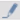

Making a Document Display as a Related Item of an Object
You can optionally create associations between documents and system objects.
- You have appropriate user authorizations to view and configure documents in Desigo CC.
- In System Browser, select Application View.
- Select Applications > Documents > […] > [document].
- The content of the document (file or HTML page) displays and is read-only.
- Click Operate Mode

to enable the Documents workspace for editing ( ).
). - Select the Manual navigation check box.
- Navigate to the object that you want to associate with this document. For example, Applications > Graphics > [floor plan graphic].
- Drag the object to the Manually assigned field of the Associated Objects expander.
- Click Save
 .
.
- When you next select the object, a link to this document will display in the Related Items tab. Clicking that link opens the document in the Secondary pane (see Viewing a Document from Related Items).